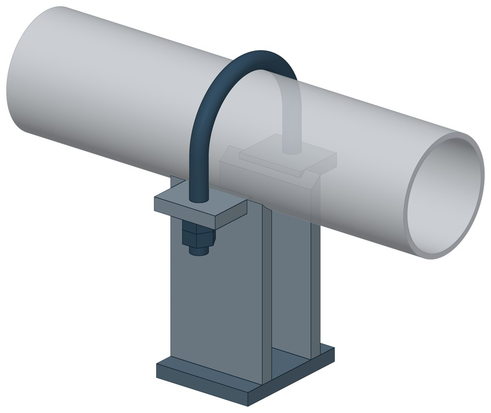

Опоры скользящие и неподвижные ОХН
МН 4010-62, серия 4.903-10. Dн 57–426 мм, масса 1,115–45,34 кг.

- Диаметр трубы Dн
- 57–426 мм
- Документ
- МН 4010-62, серия 4.903-10
- Исполнений
- 22
- Масса
- 1,115–45,34 кг
- 3D-модели
- у всех исполнений (условные: общий вид по габаритам)
Таблица исполнений ОХН
| Обозначение | Код ПРОМБУРГ | Dнмм | Ширина B1мм | Высота Нмм | Высота Н1мм | Длина Lмм | Массакг | 3D |
|---|---|---|---|---|---|---|---|---|
| ОХН 57-100 | ПБ-ОХН-0057-1 | 57, 60 | 92 | 100 | 128 | 60 | 1,115 | 3D |
| ОХН 68-100 | ПБ-ОХН-0068-1 | 68 | 102 | 100 | 134 | 60 | 1,255 | 3D |
| ОХН 76-100 | ПБ-ОХН-0076-1 | 76 | 118 | 100 | 138 | 60 | 1,465 | 3D |
| ОХН 83-100 | ПБ-ОХН-0083-1 | 83 | 120 | 100 | 142 | 70 | 1,704 | 3D |
| ОХН 89-100 | ПБ-ОХН-0089-1 | 89 | 126 | 100 | 145 | 70 | 1,702 | 3D |
| ОХН 102-100 | ПБ-ОХН-0102-1 | 102 | 148 | 100 | 151 | 140 | 3,062 | 3D |
| ОХН 108-100 | ПБ-ОХН-0108-1 | 108 | 148 | 100 | 154 | 140 | 3,145 | 3D |
| ОХН 114-100 | ПБ-ОХН-0114-1 | 114 | 156 | 100 | 157 | 140 | 3,309 | 3D |
| ОХН 127-100 | ПБ-ОХН-0127-1 | 127 | 170 | 100 | 164 | 150 | 4,118 | 3D |
| ОХН 133-100 | ПБ-ОХН-0133-1 | 133 | 180 | 100 | 166 | 150 | 3,91 | 3D |
| ОХН 140-100 | ПБ-ОХН-0140-1 | 140 | 190 | 100 | 170 | 150 | 5,014 | 3D |
| ОХН 159-100 | ПБ-ОХН-0159-1 | 159 | 210 | 100 | 180 | 170 | 5,359 | 3D |
| ОХН 168-100 | ПБ-ОХН-0168-1 | 168 | 224 | 100 | 184 | 185 | 10,66 | 3D |
| ОХН 180-100 | ПБ-ОХН-0180-1 | 180 | 234 | 100 | 190 | 185 | 11,5 | 3D |
| ОХН 194-100 | ПБ-ОХН-0194-1 | 194 | 248 | 100 | 197 | 210 | 12,06 | 3D |
| ОХН 219-100 | ПБ-ОХН-0219-1 | 219 | 281 | 100 | 210 | 210 | 15,16 | 3D |
| ОХН 245-100 | ПБ-ОХН-0245-1 | 245 | 306 | 100 | 222 | 240 | 17,73 | 3D |
| ОХН 273-100 | ПБ-ОХН-0273-1 | 273 | 352 | 100 | 236 | 260 | 22,5 | 3D |
| ОХН 299-100 | ПБ-ОХН-0299-1 | 299 | 372 | 100 | 250 | 260 | 28,52 | 3D |
| ОХН 325-100 | ПБ-ОХН-0325-1 | 325 | 400 | 100 | 262 | 320 | 29,41 | 3D |
| ОХН 377-100 | ПБ-ОХН-0377-1 | 377 | 450 | 100 | 288 | 360 | 35,62 | 3D |
| ОХН 426-100 | ПБ-ОХН-0426-1 | 426 | 500 | 100 | 313 | 420 | 45,34 | 3D |
Чтобы заказать, сообщите обозначение и код ПРОМБУРГ: +7 (499) 325-51-35, promburg@yandex.ru.
Нормативные документы
- МН 4010-62 Детали трубопроводов. Опоры хомутовые неподвижные стальных трубопроводов — документ, по которому изготавливается изделие
- Серия 4.903-10 Изделия и детали трубопроводов для тепловых сетей — документ, по которому изготавливается изделие — Не действует с 01.11.1990. Заменён: Серия 5.903-13. Изделие изготавливается по прежнему обозначению.
Связанные позиции
- Соседний тип: ОПН — Опоры приварные неподвижные скользящие ОПН
Собрать узел с этим изделием
- Конструктор узла: собрать участок с компенсатором под свои данные труба, длина, среда, условия — состав узла и спецификация бесплатно
На трубу Dн 57–426 мм в каталоге
Позиции каталога с исполнениями на те же наружные диаметры трубы.
Детали трубопровода
- Отвод стальной крутоизогнутый 90° общих Dн: 14
- Фланец стальной воротниковый общих Dн: 14
- Фланец стальной плоский приварной общих Dн: 14
- Переход стальной концентрический общих Dн: 12
- Заглушка стальная эллиптическая общих Dн: 11
- Отвод стальной крутоизогнутый 90°, 09Г2С общих Dн: 11
- Днище стальное эллиптическое общих Dн: 1
- Отвод нержавеющий 90° общих Dн: 1
Компенсаторы
- Компенсатор сильфонный 2ОПКР общих Dн: 11
- Компенсатор сильфонный 2ОПКР (ИЯНШ) 2ОПКРИ общих Dн: 11
- Компенсатор сильфонный 2СКУ.М 2СКУМ общих Dн: 11
- Компенсатор сильфонный 2СКУ.М (ИЯНШ) 2СКУМИ общих Dн: 11
- Компенсатор сильфонный 2СКУ.ППМ (ИЯНШ) 2СКУППМИ общих Dн: 11
- Компенсатор сильфонный 2СКУ.ППУ (ИЯНШ) 2СКУППУИ общих Dн: 11
- Компенсатор сильфонный 2СКУ.ППУ/ОЦ (ИЯНШ) 2СКУППУОЦИ общих Dн: 11
- Компенсатор сильфонный КС общих Dн: 11
- Компенсатор сильфонный КСО общих Dн: 11
- Компенсатор сильфонный КСО (ИЯНШ) КСОИ общих Dн: 11
- Компенсатор сильфонный КСОФ общих Dн: 11
- Компенсатор сильфонный ОПКР общих Dн: 11
- Компенсатор сильфонный ОПКР (ИЯНШ) ОПКРИ общих Dн: 11
- Компенсатор сильфонный сейсмический общих Dн: 11
И ещё 21 тип — в оглавлении каталога.
Другие опоры и подвески
- Опоры приварные неподвижные скользящие ОПН общих Dн: 22
- Опоры бескорпусные неподвижные ОБН общих Dн: 13
- Блок хомутовый ОСТ 24-125-113-01 общих Dн: 13
- Полухомуты для хомутовых блоков подвесок горизонтальных трубопроводов из хромо молибден о ванадиевых сталей ОСТ 24-125-114-01 общих Dн: 13
- Полухомут для хомутовых опор ОСТ 24-125-120-01 общих Dн: 13
- Хомутовые блоки для подвесок ОСТ 108.275.56-80 общих Dн: 13
- Опорные плиты диэлектрические ТС-632 общих Dн: 12
- Подвески ПГ и ПМ для горизонтальных трубопроводов ПГ, ПМ общих Dн: 12
- Опоры подвесного типа ПГВ, ПМВ общих Dн: 12
- Блоки хомутовые ОСТ 108.275.52-80 общих Dн: 12
И ещё 94 типа — в оглавлении каталога.
Другие типы раздела
Опоры технологических трубопроводов (ОПН, ОХН, ОБН, СТО 79814898)
- Опоры бескорпусные неподвижные ОБН
- Опоры приварные неподвижные скользящие ОПН
- Опоры сварные скользящие неподвижные и направляющие СТО 79814898-130
- Опоры хомутовые и скользящие неподвижные и направляющие СТО 79814898-131
- Опоры скользящие и неподвижные с направляющим хомутом СТО 79814898-132
Частые вопросы
Чем неподвижная опора отличается от подвижной?
Неподвижная закрепляет трубу в одной точке и принимает усилия от температурного расширения, давления и трения. Подвижная держит вес трубы и даёт ей перемещаться при нагреве. Неподвижные делят трассу на участки компенсации, подвижные стоят между ними. Место и тип каждой опоры задаёт проект.
Скользящая или катковая опора?
По СП 124.13330.2012 (п. 10.34) скользящие опоры применяют при всех способах прокладки и для всех диаметров труб. Катковые — для труб диаметром 200 мм и более при осевом перемещении, при прокладке в тоннелях, на кронштейнах, на отдельно стоящих опорах и эстакадах. Катковая опора снижает силу трения, которая передаётся на неподвижные опоры.
На каком расстоянии ставить опоры?
По СП 124.13330.2012 (п. 10.5) максимальные расстояния между подвижными опорами на прямых участках определяют расчётом на прочность и по допускаемому прогибу. Готового шага «по диаметру» норматив не даёт: пролёт задаёт проект.
По какому диаметру подбирать — Dн или Ду?
По наружному диаметру трубы Dн: именно он стоит в таблицах серии. Ду — условный проход, округлённая величина: Ду 100 соответствует Dн 108. В заявке указывайте Dн и толщину стенки трубы.
Из какой стали изготавливаются опоры?
По рабочим чертежам серии листовые детали — Ст3сп5 ГОСТ 14637-89, хомуты из круга — сталь 20 ГОСТ 1050-88. Для районов с низкой расчётной температурой воздуха применяется низколегированная сталь, в том числе 09Г2С; размеры опор при этом не меняются. В заявке укажите расчётную температуру наружного воздуха.
Что указать в заявке, чтобы получить цену без уточнений?
Обозначение с номером исполнения или код ПБ, количество, Dн и стенку трубы, расчётную температуру наружного воздуха, покрытие, город доставки и желаемый срок. Кнопка «В заявку» в таблице собирает спецификацию, которую можно выгрузить в Excel или отправить письмом.